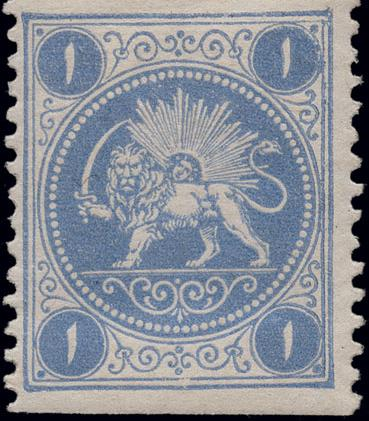
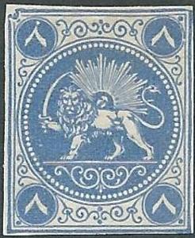
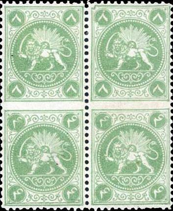

{kind=link}



{kind=link}


Return To Catalogue - Persia (Iran) 1868 issue - Persia 1868 issue, types, part 1 - Persia 1868 issue, types, part 2 - 1868 issue forgeries part 1 - 1868 issue forgeries part 2 - Persia 1868 issue, forgeries, part 3
Note: on my website many of the
pictures can not be seen! They are of course present in the
catalogue;
contact me if you want to purchase the catalogue.
Barre essays were named after the designer of the stamps in Paris: Albert Barre in 1865, who also designed some stamps of France. Five essays in four values in each four colours (green, red, blue and lilac) were made. However, only four plates (not five) were send to Persia. All of them without numerals between the feet of the lion. They exist with perforation (12 1/2), normal stamps (as provided by the post office) never have perforation. They exists with different values printed together (in the same color). These essays were very well printed, especially when compared with the stamps that were printed locally later, based on these essays (see also Persia 1868 issue, types).


All 5 types of the 4 ch value
A whole sheet of four values, five types (in tete-beche
repeated). Here in color red.